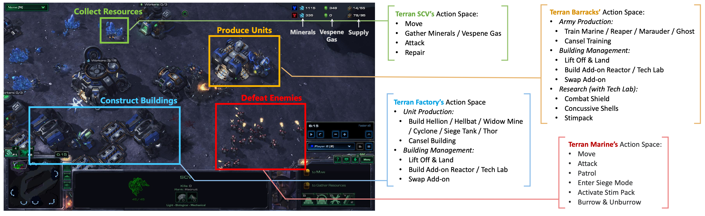
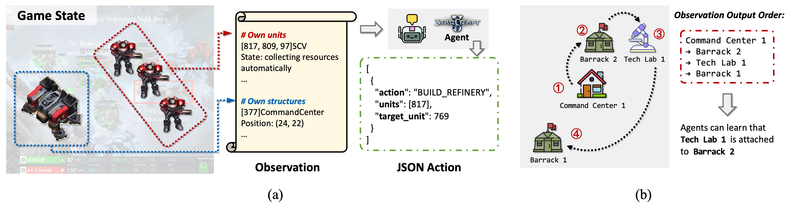
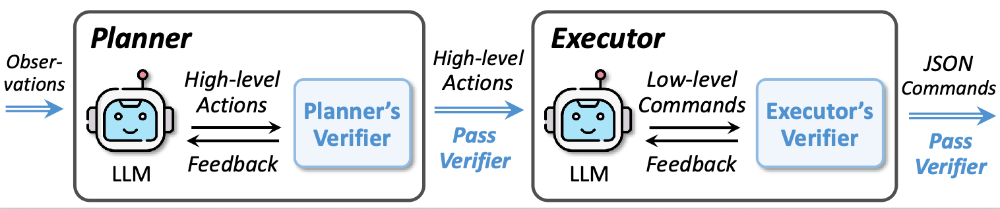

Evaluating large language models (LLMs) in complex decision-making is essential for advancing AI's ability to plan strategically and adapt in real-time. However, existing benchmarks for tasks like StarCraft II fail to capture the game's full complexity, including complete game context, action spaces, and race configurations. To address this, we present SC2Arena, a benchmark that fully supports all playable races, low-level action spaces, and optimized text observations to handle spatial reasoning challenges. We also introduce SC2Agent, a hierarchical framework that integrates strategic planning and tactical execution with iterative self-correction and continuous improvement through fine-tuning on high-quality gameplay data. Key components include a Planner-Executor-Verifier structure and an RL-inspired scoring system for selecting training samples. Experiments demonstrate SC2Agent’s ability to achieve state-of-the-art performance, with smaller models defeating strong opponents and larger models excelling against advanced AI, showcasing its potential for broader AI research.
We introduce SC2Arena, a structured, text-based benchmark designed to evaluate LLM agents in StarCraft II. It provides standardized observation and action interfaces, preserving the game's original strategic depth and complexity.

StarCraft II is a highly complex real-time strategy game demanding proficiency in macro-management, micro-control, and strategic decision-making under partial information. Each of its three races offers a unique playstyle:
Unlike prior benchmarks that often focus on isolated micro-management or high-level strategy, SC2Arena offers a comprehensive evaluation platform. Key improvements include:

To enable LLMs to play effectively, raw game states must be converted into textual observations. This presents challenges like spatial reasoning difficulty and information overload. SC2Arena addresses these with two key techniques:
These optimizations are proven to significantly improve agent performance by making the textual observations more concise and spatially aware.
We introduce SC2Agent, a closed-loop, self-improving, and self-correcting LLM agent framework for StarCraft II. Its design allows even smaller LLMs to achieve competitive performance against challenging opponents by continuously learning from gameplay.

To tackle the vast action space and strict syntax requirements of StarCraft II, SC2Agent employs a two-tier architecture with integrated self-correction:
A key feature of SC2Agent is its ability to learn and improve over time. This is achieved through a self-improvement loop based on Supervised Fine-Tuning (SFT):
@misc{sc2arena2025,
author = {Anonymous},
title = {SC2Arena: A Comprehensive Benchmark and Agent for LLMs in StarCraft II},
year = {2024},
publisher = {GitHub},
journal = {GitHub repository},
howpublished = {\url{YOUR_PROJECT_URL_HERE}},
}